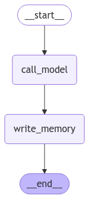

🧠 Tema 1: Long-Term Memory – Memoria a Largo Plazo en LangGraph
🌟 ¿Qué es la Memoria a Largo Plazo en LangGraph?
En el Curso 1, exploramos cómo LangGraph maneja la memoria de estado, que nos permite almacenar información dentro del estado del grafo mientras se ejecuta una sesión. Sin embargo, esta memoria es temporal y se pierde una vez que el flujo del grafo finaliza.
También aprendimos sobre la memoria de corto alcance (Short-Term Memory), que nos permitía guardar el historial de un chat dentro de una misma sesión, proporcionando mayor contexto y fluidez a la conversación sin necesidad de almacenamiento externo.
Ahora, en el Curso 3, introducimos un concepto aún más avanzado: Long-Term Memory, una memoria persistente que permite mantener datos entre múltiples ejecuciones, haciendo posible que el sistema recuerde información pasada y la reutilice en futuras interacciones.
🔹 ¿Qué nos permite hacer la memoria a largo plazo?
✅ Almacenar contexto de conversaciones previas para mantener continuidad en interacciones futuras.
✅ Persistir información relevante en bases de datos o sistemas externos.
✅ Optimizar respuestas en chatbots al recordar detalles importantes a lo largo del tiempo.
Con esta memoria, nuestros grafos pueden aprender de interacciones pasadas y mejorar su desempeño con el tiempo. 🚀
🔄 Comparación: Memoria Básica vs. Memoria a Corto y Largo Plazo
| Característica | Memoria Básica 🟢 | Memoria a Corto Plazo 🟡 | Memoria a Largo Plazo 🔵 |
|---|---|---|---|
| Alcance | Solo durante la ejecución del grafo | Se mantiene dentro de una sesión activa | Se mantiene entre sesiones |
| Persistencia | Se borra al finalizar el flujo | Se almacena temporalmente en la memoria del grafo | Se guarda en almacenamiento externo |
| Ejemplo de Uso | Referencias dentro de una conversación en curso | Mantener el historial de mensajes en una sesión de chat | Recordar interacciones a lo largo del tiempo |
| Implementación | Se gestiona dentro del estado (State) |
Se almacena en memoria (MemorySaver) dentro de la sesión |
Usa almacenamiento externo como bases de datos (InMemoryStore) |
| Casos de Uso | Flujos de conversación dentro de un solo request | Chats que necesitan contexto en una misma sesión | Sistemas con memoria continua (chatbots avanzados, asistentes virtuales, etc.) |
Nota
- La memoria básica es útil para tareas donde no necesitamos persistencia entre sesiones.
- La memoria a corto plazo nos permite recordar datos dentro de una misma sesión, pero se pierde al cerrarla.
- la memoria a largo plazo es ideal cuando queremos que el sistema recuerde información incluso después de varias sesiones, permitiendo experiencias más personalizadas y contextuales.
🛠️ ¿Cómo Funciona la Memoria a Largo Plazo?
LangGraph nos permite almacenar memoria de manera persistente utilizando diferentes opciones:
✅ Bases de datos externas como PostgreSQL o MongoDB.
✅ Sistemas de almacenamiento en la nube como Redis o vectores semánticos.
✅ Archivos locales donde guardamos registros de conversación.
En esta implementación, LangGraph guarda los datos en un sistema de almacenamiento que podemos recuperar en futuras ejecuciones del grafo.
📌 Ejemplo Práctico: Implementación de Memoria a Largo Plazo en LangGraph
from IPython.display import Image, display
from langgraph.checkpoint.memory import MemorySaver
from langgraph.graph import StateGraph, MessagesState, START, END
from langgraph.store.base import BaseStore
from langchain_core.messages import HumanMessage, SystemMessage
from langchain_core.runnables.config import RunnableConfig
# Instrucción del chatbot
MODEL_SYSTEM_MESSAGE = """Eres un asistente útil con memoria que proporciona información personalizada sobre el usuario.
Si tienes memoria para este usuario, utilízala para personalizar tus respuestas.
Aquí está la memoria (puede estar vacía): {memory}"""
# Crear nueva memoria a partir del historial de chat y cualquier memoria existente
CREATE_MEMORY_INSTRUCTION = """Estás recopilando información sobre el usuario para personalizar tus respuestas.
INFORMACIÓN ACTUAL DEL USUARIO:
{memory}
INSTRUCCIONES:
1. Revisa cuidadosamente el historial de chat a continuación.
2. Identifica nueva información sobre el usuario, como:
- Datos personales (nombre, ubicación).
- Preferencias (gustos, aversiones).
- Intereses y aficiones.
- Experiencias pasadas.
- Objetivos o planes futuros.
3. Fusiona cualquier nueva información con la memoria existente.
4. Formatea la memoria como una lista clara con viñetas.
5. Si la nueva información contradice la memoria existente, conserva la versión más reciente.
Recuerda: Solo incluye información real directamente mencionada por el usuario. No hagas suposiciones ni inferencias.
Basado en el historial de chat a continuación, actualiza la información del usuario:"""
def call_model(state: MessagesState, config: RunnableConfig, store: BaseStore):
"""Carga la memoria desde el almacenamiento y la usa para personalizar la respuesta del chatbot."""
# Obtiene el ID del usuario desde la configuración
user_id = config["configurable"]["user_id"]
# Recupera la memoria desde el almacenamiento
namespace = ("memory", user_id)
key = "user_memory"
existing_memory = store.get(namespace, key)
# Extrae el contenido de la memoria si existe y agrega un prefijo
if existing_memory:
# El valor es un diccionario con la clave "memory"
existing_memory_content = existing_memory.value.get('memory')
else:
existing_memory_content = "No se encontró memoria previa."
# Formatea la memoria en el mensaje del sistema
system_msg = MODEL_SYSTEM_MESSAGE.format(memory=existing_memory_content)
# Responde utilizando la memoria junto con el historial de chat
response = model.invoke([SystemMessage(content=system_msg)] + state["messages"])
return {"messages": response}
def write_memory(state: MessagesState, config: RunnableConfig, store: BaseStore):
"""Reflexiona sobre el historial de chat y guarda la memoria en el almacenamiento."""
# Obtiene el ID del usuario desde la configuración
user_id = config["configurable"]["user_id"]
# Recupera la memoria existente desde el almacenamiento
namespace = ("memory", user_id)
existing_memory = store.get(namespace, "user_memory")
# Extrae el contenido de la memoria
if existing_memory:
existing_memory_content = existing_memory.value.get('memory')
else:
existing_memory_content = "No se encontró memoria previa."
# Formatea la memoria en el mensaje del sistema
system_msg = CREATE_MEMORY_INSTRUCTION.format(memory=existing_memory_content)
new_memory = model.invoke([SystemMessage(content=system_msg)] + state['messages'])
# Sobrescribe la memoria existente en el almacenamiento
key = "user_memory"
# Guarda el valor como un diccionario con la clave "memory"
store.put(namespace, key, {"memory": new_memory.content})
# Definir el grafo
builder = StateGraph(MessagesState)
builder.add_node("call_model", call_model)
builder.add_node("write_memory", write_memory)
builder.add_edge(START, "call_model")
builder.add_edge("call_model", "write_memory")
builder.add_edge("write_memory", END)
# Almacenamiento para la memoria a largo plazo (entre sesiones)
across_thread_memory = InMemoryStore()
# Checkpointer para la memoria a corto plazo (dentro de una sesión)
within_thread_memory = MemorySaver()
# Compilar el grafo con memoria a corto y largo plazo
graph = builder.compile(checkpointer=within_thread_memory, store=across_thread_memory)
# Visualizar el grafo
display(Image(graph.get_graph(xray=1).draw_mermaid_png()))

Este código implementa un sistema de memoria a largo plazo y memoria a corto plazo en un grafo de LangGraph.
-
🟡 Memoria a corto plazo (
MemorySaver):
Permite recordar información dentro de una única sesión o hilo de conversación. -
🔵 Memoria a largo plazo (
InMemoryStore):
Guarda información del usuario entre múltiples sesiones para personalizar respuestas futuras. -
📌 Estructura del Grafo:
call_model: Recupera la memoria almacenada y la usa para personalizar las respuestas del chatbot.write_memory: Extrae información del historial de mensajes y la almacena para su uso posterior.
-
💡 Personalización del Chatbot:
El chatbot puede recordar detalles personales del usuario, como su nombre o intereses, y utilizarlos en futuras conversaciones.
🚀 Probando la Memoria a Largo Plazo
📝 Iniciamos un chat
Ejecutamos un chat donde el usuario proporciona su nombre y un gusto personal:
# Proporcionamos un ID de hilo para la memoria a corto plazo (dentro de la sesión)
# Proporcionamos un ID de usuario para la memoria a largo plazo (entre sesiones)
config = {"configurable": {"thread_id": "1", "user_id": "1"}}
# Entrada del usuario
input_messages = [HumanMessage(content="Hola, me llamo Raúl y me gusta salir en bici.")]
# Ejecutamos el grafo y mostramos la respuesta del chatbot
for chunk in graph.stream({"messages": input_messages}, config, stream_mode="values"):
chunk["messages"][-1].pretty_print()
================================ Human Message =================================
Hola, me llamo Raúl y me gusta salir en bici.
================================== Ai Message ==================================
¡Hola, Raúl! Es genial que te guste salir en bici. ¿Sueles hacer rutas largas o prefieres paseos más cortos?
Podemos ver cómo esta información se almacena en la memoria a corto plazo, permitiendo que el chatbot siga recordándola en la conversación actual.
Para verificarlo, podemos inspeccionar el estado del grafo:
thread = {"configurable": {"thread_id": "1"}}
state = graph.get_state(thread).values
for m in state["messages"]:
m.pretty_print()
================================ Human Message =================================
Hola, me llamo Raúl y me gusta salir en bici.
================================== Ai Message ==================================
¡Hola, Raúl! Es genial que te guste salir en bici. ¿Sueles hacer rutas largas o prefieres paseos más cortos?
Además, también podemos revisar la memoria a largo plazo para comprobar qué información se ha almacenado:
user_id = "1"
namespace = ("memory", user_id)
existing_memory = across_thread_memory.get(namespace, "user_memory")
existing_memory.dict()
{'namespace': ['memory', '1'],
'key': 'user_memory',
'value': {'memory': 'Actualización de la memoria del usuario:\n\n- Nombre: Raúl\n- Gustos: Salir en bici.'},
'created_at': '2025-02-05T11:39:01.252749+00:00',
'updated_at': '2025-02-05T11:39:01.252753+00:00'}
Nota
Como podemos vemos ver, nuestro grafo ha creado ya un pequeño perfil de nuestro usuario, almazenando tanto su nombre, como sus gustos.
🔄 Iniciamos un nuevo chat
Ahora, simularemos una nueva conversación, donde el usuario no proporciona contexto previo, pero el chatbot debería recordar información de la memoria a largo plazo:
# Proporcionamos un ID de un nuvo hilo para la memoria a corto plazo (dentro de la sesión), esto simulara un nuevo chat.
# Proporcionamos un ID de usuario para la memoria a largo plazo (entre sesiones)
config = {"configurable": {"thread_id": "2", "user_id": "1"}}
# Entrada del usuario
input_messages = [HumanMessage(content="¿Me puedes recomendar algo que hacer hoy?")]
# Ejecutamos el grafo y mostramos la respuesta del chatbot
for chunk in graph.stream({"messages": input_messages}, config, stream_mode="values"):
chunk["messages"][-1].pretty_print()
================================ Human Message =================================
¿Me puedes recomendar algo que hacer hoy?
================================== Ai Message ==================================
¡Claro, Raúl! Dado que te gusta salir en bici, podrías aprovechar el día para hacer una ruta en bicicleta. Busca algún sendero o parque cercano donde puedas disfrutar del paisaje. Si el clima es agradable, también podrías considerar llevar algo de comida y hacer un picnic en el camino. ¿Te gustaría que te ayudara a encontrar lugares específicos para montar en bici?
Nota
A pesar de que el usuario no ha mencionado su nombre ni sus intereses en este nuevo chat, el chatbot recuerda que se llama Raúl y que le gusta salir en bici, gracias a la memoria almacenada en sesiones anteriores.
🔎 ¿Cuándo Usar Memoria a Largo Plazo?
La memoria persistente es clave en aplicaciones como:
- Chatbots que deben recordar a los usuarios y personalizar respuestas según interacciones previas.
- Asistentes virtuales que requieren seguimiento de tareas o preferencias del usuario.
- Sistemas de soporte técnico que deben recordar consultas anteriores para brindar un mejor servicio.
Si nuestro sistema necesita contexto entre múltiples sesiones, entonces la memoria a largo plazo es la mejor opción.
✨ Conclusión
La memoria a largo plazo en LangGraph nos permite alamacenar informacion relevante de nuestro usuario, podriamos incluso generar un pequeño perfil personalizado para usarlo en posteriores sesiones.
Uno de los puntos que hace esta tecnica tan interesante, es que podemos jugar con el tipo de informacion que almacenamos de nuestro usuario, haciendo que el resultado de las respuesta sea mas espectacular.
✅ Nos ayuda a recordar información más allá de una sesión, mejorando la experiencia del usuario.
✅ Permite almacenar datos en bases de datos externas, brindando mayor flexibilidad.
✅ Es ideal para chatbots, asistentes y sistemas de soporte técnico que requieren memoria a largo plazo.
🚀 Con esta funcionalidad, nuestros grafos pueden evolucionar y mejorar con el tiempo.
🔎 Recursos:
- Ver notebook en Google Colab
 Definición: Memory
Definición: Memory- Definición: Memory-store
- Class: BaseStore
- Wikipedia: Semantic-memory
🧑🏫 ¿Qué Hemos Aprendido?
- Diferencias entre la memoria básica y la memoria a largo plazo.
- Cómo funciona la persistencia de datos en LangGraph.
- Cuándo es útil utilizar memoria persistente en nuestros grafos.
🌐 ¿Qué es lo Siguiente?
En el próximo tema, exploraremos memory schema, almacenando memoria con una estructura personalizada.